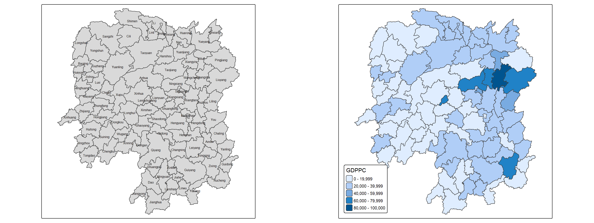
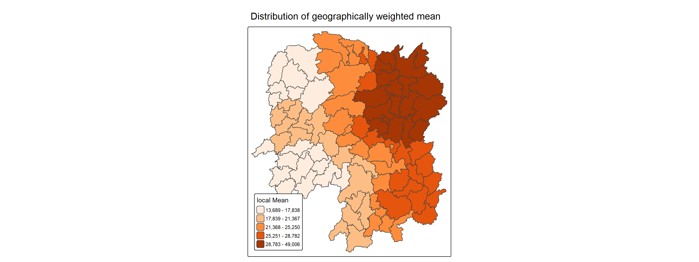

pacman::p_load(
sf,
tidyverse,
rvest,
knitr,
spdep,
tmap,
GWmodel,
ggstatsplot
)In_class_ex04
Introduction
In this in-class exercise, I explore how geographically weighted summary statistics (GWSS) describe variation across space. A single overall average can conceal differences between places. Local summaries offer a complementary perspective by weighting observations according to their distance from each location.
The exercise uses the supplied boundaries for 88 county-level areas in Hunan, China, together with socioeconomic indicators from Hunan_2012.csv. My main variable is GDP per capita (GDPPC). I join the two datasets through County, map the original values, and prepare the spatial objects required by GWmodel. The indicators refer to 2012, not the year in which I completed this exercise.
The workflow explores fixed and adaptive bandwidths, using cross-validation (CV) and corrected Akaike Information Criterion (AICc) for the intercept-only model GDPPC ~ 1. I then use the adaptive AICc-selected bandwidth and a bisquare kernel to calculate local summaries and map the geographically weighted mean. This provides a practical way to examine how the definition of a local neighbourhood influences the summary.
Learning objectives
- Join spatial boundaries and attribute data while retaining the geometry.
- Distinguish a fixed-distance bandwidth from an adaptive nearest-neighbour bandwidth.
- Explore CV and AICc bandwidth selection in
GWmodel. - Calculate and visualise the geographically weighted mean of GDP per capita with
tmap.
These maps are exploratory descriptions rather than significance tests or explanations of economic causes. Local means depend on the kernel, bandwidth and spatial representation; they should not be interpreted as independently observed county values. Method details are available in the GWSS documentation and bandwidth-selection documentation.
Practical workflow
Package Loading
data Preparing
hunan_sf <- st_read(dsn = "data/geospatial", layer = "Hunan")Reading layer `Hunan' from data source
`E:\JUNCHENLI\ISSS626_GAA\In_Class_Ex\In-class-ex04\data\geospatial'
using driver `ESRI Shapefile'
Simple feature collection with 88 features and 7 fields
Geometry type: POLYGON
Dimension: XY
Bounding box: xmin: 108.7831 ymin: 24.6342 xmax: 114.2544 ymax: 30.12812
Geodetic CRS: WGS 84hunan2012 <- read_csv("data/aspatial/Hunan_2012.csv")
hunan_sf <- left_join(hunan_sf, hunan2012) %>%
select(1:3, 7,15,16,31,32)Mapping GDPPC

basemap <- tm_shape(hunan_sf) +
tm_polygons() +
tm_text("NAME_3", size=0.5)
gdppc <- qtm(hunan_sf, "GDPPC") +
tm_layout(
legend.position = c("left", "bottom"))
tmap_arrange(basemap,gdppc,asp = 1,ncol = 2)Converting to SpatialPolygonDataFrame
hunan_sp <- hunan_sf %>%
as_Spatial()Geographically Weighted Summary Statistics(GSWW) with adaptivev bandwidth
Determine adaptive bandwidth
bw_CV <- bw.gwr(GDPPC ~1,
data = hunan_sp,
approach = "CV",
adaptive = TRUE,
kernel = "bisquare",
longlat = T)Adaptive bandwidth: 62 CV score: 15515442343
Adaptive bandwidth: 46 CV score: 14937956887
Adaptive bandwidth: 36 CV score: 14408561608
Adaptive bandwidth: 29 CV score: 14198527496
Adaptive bandwidth: 26 CV score: 13898800611
Adaptive bandwidth: 22 CV score: 13662299974
Adaptive bandwidth: 22 CV score: 13662299974 bw_AIC <- bw.gwr(GDPPC ~1,
data = hunan_sp,
approach = "AICc",
adaptive = TRUE,
kernel = "bisquare",
longlat = T)Adaptive bandwidth (number of nearest neighbours): 62 AICc value: 1923.156
Adaptive bandwidth (number of nearest neighbours): 46 AICc value: 1920.469
Adaptive bandwidth (number of nearest neighbours): 36 AICc value: 1917.324
Adaptive bandwidth (number of nearest neighbours): 29 AICc value: 1916.661
Adaptive bandwidth (number of nearest neighbours): 26 AICc value: 1914.897
Adaptive bandwidth (number of nearest neighbours): 22 AICc value: 1914.045
Adaptive bandwidth (number of nearest neighbours): 22 AICc value: 1914.045 bw_AIC[1] 22GWSS with Fixed Bandwidth
Determine fixed bandwidth
bw_CV <- bw.gwr(GDPPC ~1,
data = hunan_sp,
approach = "CV",
adaptive = FALSE,
kernel = "bisquare",
longlat = T)Fixed bandwidth: 357.4897 CV score: 16265191728
Fixed bandwidth: 220.985 CV score: 14954930931
Fixed bandwidth: 136.6204 CV score: 14134185837
Fixed bandwidth: 84.48025 CV score: 13693362460
Fixed bandwidth: 52.25585 CV score: Inf
Fixed bandwidth: 104.396 CV score: 13891052305
Fixed bandwidth: 72.17162 CV score: 13577893677
Fixed bandwidth: 64.56447 CV score: 14681160609
Fixed bandwidth: 76.8731 CV score: 13444716890
Fixed bandwidth: 79.77877 CV score: 13503296834
Fixed bandwidth: 75.07729 CV score: 13452450771
Fixed bandwidth: 77.98296 CV score: 13457916138
Fixed bandwidth: 76.18716 CV score: 13442911302
Fixed bandwidth: 75.76323 CV score: 13444600639
Fixed bandwidth: 76.44916 CV score: 13442994078
Fixed bandwidth: 76.02523 CV score: 13443285248
Fixed bandwidth: 76.28724 CV score: 13442844774
Fixed bandwidth: 76.34909 CV score: 13442864995
Fixed bandwidth: 76.24901 CV score: 13442855596
Fixed bandwidth: 76.31086 CV score: 13442847019
Fixed bandwidth: 76.27264 CV score: 13442846793
Fixed bandwidth: 76.29626 CV score: 13442844829
Fixed bandwidth: 76.28166 CV score: 13442845238
Fixed bandwidth: 76.29068 CV score: 13442844678
Fixed bandwidth: 76.29281 CV score: 13442844691
Fixed bandwidth: 76.28937 CV score: 13442844698
Fixed bandwidth: 76.2915 CV score: 13442844676
Fixed bandwidth: 76.292 CV score: 13442844679
Fixed bandwidth: 76.29119 CV score: 13442844676
Fixed bandwidth: 76.29099 CV score: 13442844676
Fixed bandwidth: 76.29131 CV score: 13442844676
Fixed bandwidth: 76.29138 CV score: 13442844676
Fixed bandwidth: 76.29126 CV score: 13442844676
Fixed bandwidth: 76.29123 CV score: 13442844676 w_AIC <- bw.gwr(GDPPC ~1,
data = hunan_sp,
approach = "AICc",
adaptive = FALSE,
kernel = "bisquare",
longlat = T)Fixed bandwidth: 357.4897 AICc value: 1927.631
Fixed bandwidth: 220.985 AICc value: 1921.547
Fixed bandwidth: 136.6204 AICc value: 1919.993
Fixed bandwidth: 84.48025 AICc value: 1940.603
Fixed bandwidth: 168.8448 AICc value: 1919.457
Fixed bandwidth: 188.7606 AICc value: 1920.007
Fixed bandwidth: 156.5362 AICc value: 1919.41
Fixed bandwidth: 148.929 AICc value: 1919.527
Fixed bandwidth: 161.2377 AICc value: 1919.392
Fixed bandwidth: 164.1433 AICc value: 1919.403
Fixed bandwidth: 159.4419 AICc value: 1919.393
Fixed bandwidth: 162.3475 AICc value: 1919.394
Fixed bandwidth: 160.5517 AICc value: 1919.391 bw_AIC[1] 22Computing geographically wieghted summary statistics
gwstat <- gwss(data = hunan_sp,
vars = "GDPPC",
bw = bw_AIC,
kernel = "bisquare",
quantile = TRUE,
adaptive = TRUE,
longlat = T)Preparing the output data
gwstat_df <- as.data.frame(gwstat$SDF)hunan_gstat <- cbind(hunan_sf, gwstat_df)Visualising geographically weighted summary statistics
The Geographically Weighted Mean

The Code
tm_shape(hunan_gstat) +
tm_polygons(fill = "GDPPC_LM",
fill.scale = tm_scale_intervals(
style = "quantile",
n = 5,
values = "brewer.oranges"),
fill.legend = tm_legend(
title = "local Mean")) +
tm_borders(fill_alpha = 0.5) +
tm_title("Distribution of geographically weighted mean") +
tm_layout(legend.position = c("left", "bottom"))